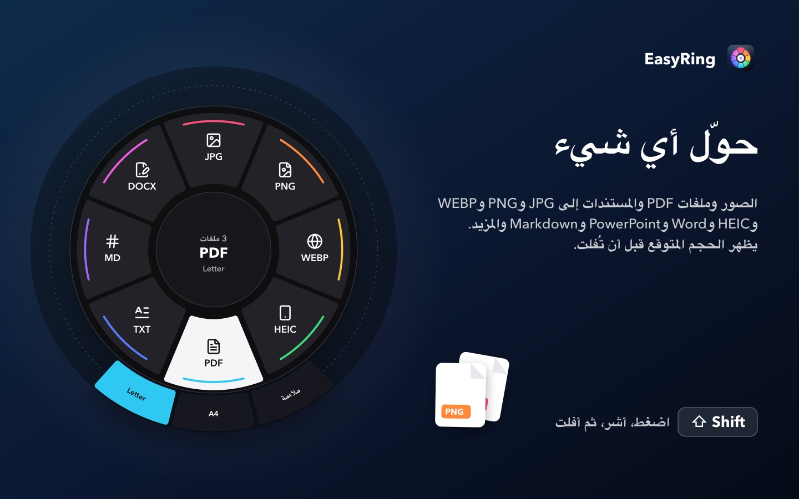
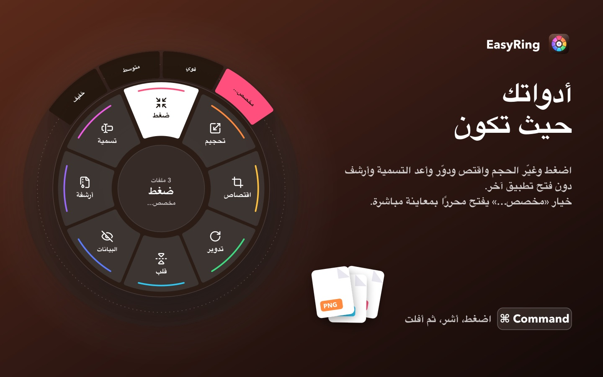
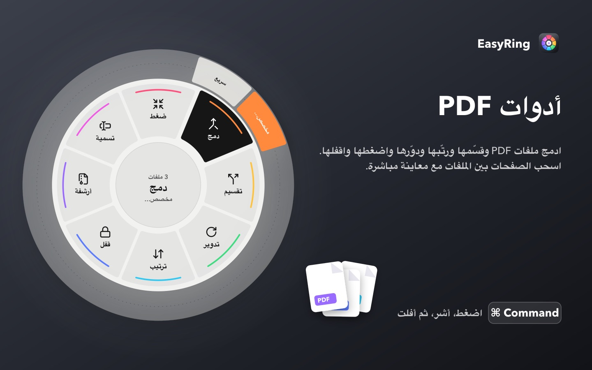
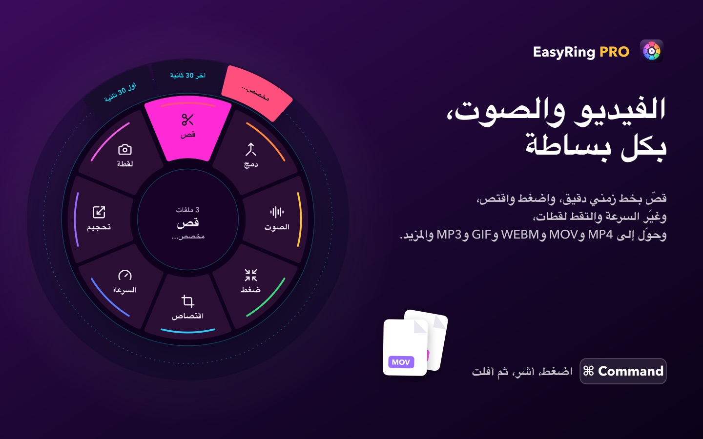
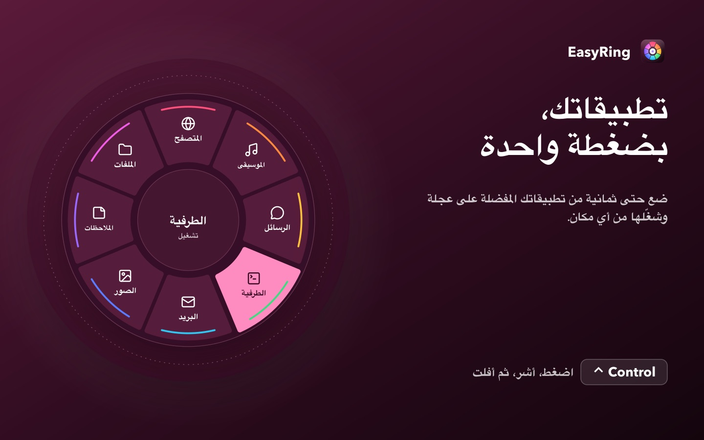
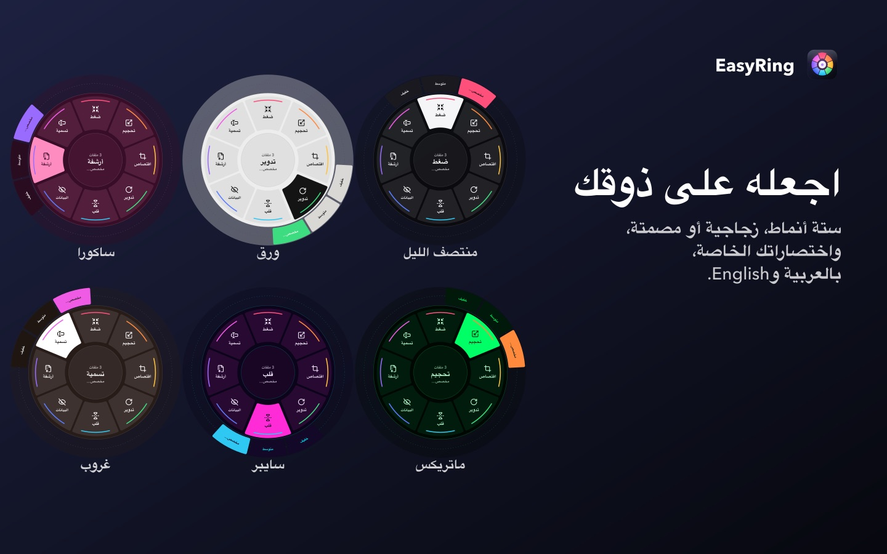

كل ما تحتاجه لملفاتك،
بحركة واحدة
حدّد ملفاتك في Finder، اضغط مفتاحًا باستمرار، أشر إلى ما تريد ثم أفلت. حوّل واضغط وغيّر الحجم واقتص والمزيد، في مكان ملفاتك.
حمّله من Mac App Store مجاني للصور وملفات PDF والمستندات · Pro يفتح الفيديو والصوت بشراء واحد





حركة واحدة
اضغط باستمرار على Shift أو Command أو Control، أشر ثم أفلت. يعمل على ملف واحد أو مجموعة ملفات.
حوّل أي شيء
الصور إلى JPG وPNG وWEBP وHEIC وPDF، والمستندات إلى Word وPowerPoint وMarkdown وغيرها.
أدواتك حيث تكون
اضغط وغيّر الحجم واقتص ودوّر وأعد التسمية وأرشف، مع معاينة مباشرة عند الحاجة.
أدوات PDF
ادمج ملفات PDF وقسّمها ورتّبها ودوّرها واضغطها واقفلها.
الفيديو والصوت PRO
قص ودمج وضغط واقتصاص وتحويل إلى MP4 وMOV وWEBM وGIF وMP3 وغيرها.
خصوصيتك أولًا
كل شيء يتم على جهازك. بلا حساب، بلا إعلانات، بلا تتبع.